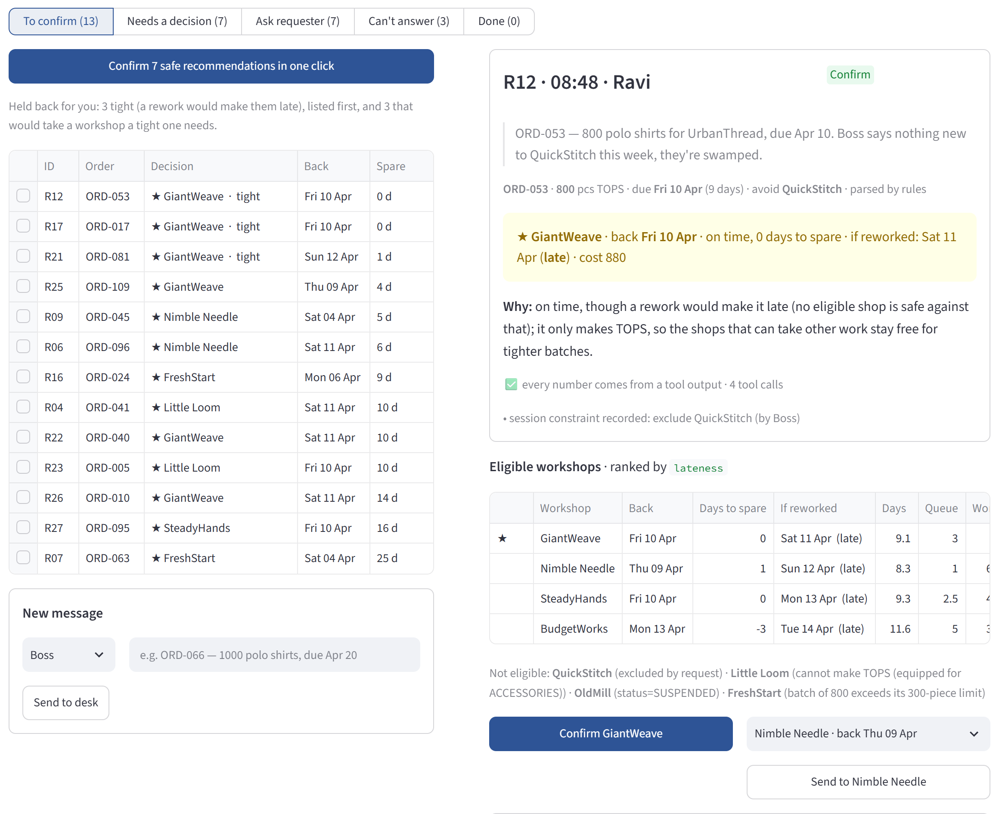

GPT-5 mini behaviour accuracy
115 correct / 129 responses
43 messages × 3 runs
NUS DSS5105 · CAPSTONE TRACK 2
A quick-response subcontracting desk for SweaterCo. Language understanding meets deterministic production planning, with the dispatcher in control.
LLM-enabled production dispatch & resource optimisation
A team capstone prototype, presented as a curated project showcase.
120orders in the official simulator dataset
8workshop profiles for capacity decisions
43human-written held-out messages
Understand.
Calculate. Confirm.
01 / THE OPERATING PROBLEM
A workshop can be fast, inexpensive, or flexible. Choosing one for a batch changes what is possible for the next.
In the SweaterCo course scenario, dispatch requests arrive as group-chat messages. They can omit an order reference, contradict existing records, request an ineligible workshop, or ask a question the available data cannot answer.
Understand before allocating. Resolve the order and ask when the request is ambiguous.
Make capacity visible. Check capability, batch limits, restrictions and the current queue.
Expose the decision. Show delivery estimates, alternatives and rework risk before confirmation.
02 / SYSTEM DESIGN
The separation of responsibilities is the core design choice: language interpretation feeds a deterministic, inspectable dispatch pipeline.
Extract structured fields with an LLM or rule parser. Check extracted values against the message.
Structured requestCross-check order state. Propose dispatch, clarify, refuse, or state that the data cannot answer.
Explicit behaviourPython tools check eligibility, read queues, estimate delivery and rank candidates by the objective.
Deterministic outputsBuild explanations from tool outputs. In the dispatcher UI, approval precedes a ledger write.
Traceable decisionImplementation, precisely. The inspected language client uses the OpenAI Responses API with strict JSON Schema output. Application code orchestrates the Python tools; the inspected request does not supply a model-selected function-calling tool loop. Replies are assembled from tool outputs and checked for numeric traceability.
Display the expected return date alongside a rework scenario date, so a dispatcher can see when an apparently on-time plan is fragile.
Compare lateness, slack use, cost, defects and fairness. A lower late rate can come with longer turnaround.
The operational UI requires confirmation. The evaluation replay can auto-confirm proposals to measure a fixed protocol.
03 / EXPLORE THE EXPERIENCE
Choose a request type, inspect the response and see where a dispatcher makes the final decision.

04 / EVALUATION & VERIFIED RESULTS
Language behaviour and allocation quality are evaluated separately. Simulator performance does not measure LLM accuracy.
The held-out inbox uses a separate ledger and the use_slack objective. Behaviour accuracy checks the response category: dispatch, clarify, refuse, or decline to answer.
115 correct / 129 responses
43 messages × 3 runs
119 correct / 129 responses
Not a fresh held-out test
Reply numbers matched recorded tool outputs in these evaluations.
Traceability does not establish correctnessBehaviour accuracy · 0–100% scale · rules: 37/43; LLM: 115/129. LLM runs repeat the same 43 messages and are not 129 independent messages.
Team members wrote 44 messages; one was excluded before the 43-message set was frozen. Messages were independently labelled by two members who did not write them, with disagreements adjudicated using the agreed rules. One retained message is nearly identical to an official example. This is a small, team-authored course test, not a production benchmark.
The first test used system version 7918ac3 (system code equivalent to 3e9f2ee), GPT-5 mini, prompt v2, grounding 2.2 and no rule fallbacks. The error-informed retest used 32e9aa7. A separate first-test reproduction recorded 114/129 (88.4%) for the LLM, illustrating run variability.
Decision-soundness scoring was 80.8% on 78 checked cases in the first LLM test and 84.6% in the retest. The labels do not fully encode standing constraints; the project notes identify consequential scoring limitations. No field-extraction accuracy is reported for this held-out set because it has no manual field parses.
Official v3 simulator · 120 orders per run · mean over seeds 5105–5114.
| Policy | Late orders | Mean late days* | Mean turnaround** |
|---|---|---|---|
| Earliest finish Simple rule baseline | 1.67% | 0.178 | 8.26 days |
| Rework-aware specialist-first lateness · round 2 | 1.67% | 0.091 | 9.25 days |
| Use available slack use_slack | 1.00% | 0.066 | 13.97 days |
* Mean lateness across all orders, including on-time orders. **Normal-condition turnaround is shown for context; shock turnaround is not included in the selected summary.
On official data, the round-2 lateness policy ties the simple rule at 1.67%. It reduces mean late days from 0.178 to 0.091 while increasing mean turnaround from 8.26 to 9.25 days. This is a trade-off, not an across-the-board win.
The round-2 policy first favours workshops that remain on time under the rework scenario, then less flexible specialists, then earliest completion. The use_slack policy is a separate configuration. Policies run against the same official simulator; the LLM is not involved in these experiments.
Reported experiment version: 1c6cb61. Recorded generation command: python round2/实验/exp_round2.py, using seeds 5105–5114 for normal and shock conditions. The selected CSV contains aggregate metrics and no per-seed commit field; the version is from the accompanying experiment record. Figures are transcribed from saved project results, not rerun as part of this portfolio build.
Under shock, late rates are 1.917% for earliest finish, 2.000% for round-2 lateness and 1.667% for use_slack. Additional synthetic perturbation and Sunday-closure experiments are separate from official results. No live-factory improvement, financial saving or usability improvement is claimed.
05 / PROJECT DELIVERY
NUS DSS5105 Capstone Track 2
SweaterCo Quick-Response Subcontracting Desk
This showcase presents the team's system design, selected interface evidence and recorded evaluations. It makes no individual ownership claims and does not represent a production deployment.